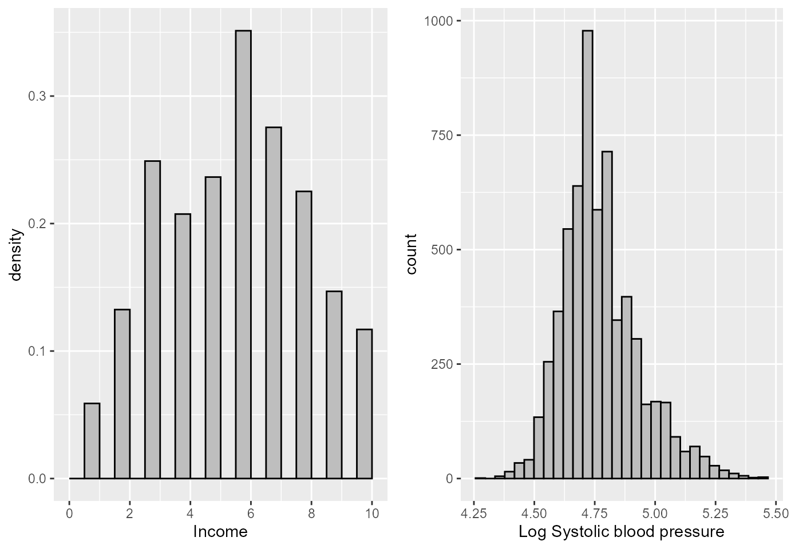

vignette.RmdIn order to facilitate the adjustment of the sample selection models existing in the literature, we created the ssmodels package. Our package allows the adjustment of the classic Heckman model, and the estimation of the parameters of this model via the maximum likelihood method and two-step method, in addition to the adjustment of the Heckman-t models, introduced in the literature in 2012 by Marchenko and Genton (2012) and the Heckman-Skew model introduced in the literature by Ogundimu and Hutton (2016) in 2016. We also implemented functions to adjust the generalized version of the Heckman model that allows the inclusion of covariables to the dispersion and correlation parameters and a function to adjust the Heckman-BS model introduced in 2020 by Souza Bastos and Barreto-Souza (2020) that uses the Birnbaum-Saunders distribution as a joint distribution of the selection and primary regression variables.
The MEPS is a set of large-scale surveys of families, individuals and their medical providers (doctors, hospitals, pharmacies, etc.) in the United States. It has data on the health services Americans use, how often they use them, the cost of these services and how they are paid, as well as data on the cost and reach of health insurance available to American workers. The sample is restricted to persons aged between 21 and 64 years and contains a variable response with 3328 observations of outpatient costs, of which 526 (15.8%) correspond to unobserved expenditure values and identified as zero expenditure for adjustment of the models. It also includes the following explanatory variables:
These data were also used by Colin and Trivedi (2009), Marchenko and Genton (2012) and Zhelonkin, Genton, and Ronchetti (2016) to fit the classical Heckman and Heckman-t models and the robust version of the two-step method, respectively. We use the variable of interest \(Y_{1}^{*}={\rm ambexp}\), which represents expenditure on medical services, on the logarithmic scale, since it is highly asymmetric, see Figura 4. The variable \(Y_{2}^{*}={\rm dambexp},\) representing the willingness to spend, is not observed. We observe \(U=1\{Y_{2}^{*}>0\},\) which represents the decision to spend on medical care.
library(ssmodels)
#Leitura do dados MEPS2001
data(MEPS2001)
#tornando visiveis as colunas do data-frame
attach(MEPS2001)
barfill <- "grey"
barlines <- "black"
p1 <- ggplot(MEPS2001,aes(ambexp))+geom_histogram(colour = barlines, fill = barfill)+
scale_x_continuous(name = "(a) Expenditures Medical",
breaks = seq(0, 15000, 2500),
limits=c(0, 15000))+
scale_y_continuous(name = "Count",
breaks = seq(0, 800, 100),
limits=c(0, 800))
p2 <- ggplot(MEPS2001,aes(lambexp))+geom_histogram(colour = barlines, fill = barfill)+
scale_x_continuous(name = "(b) Log of Expenditures Medical",
breaks = seq(0, 11, 1),
limits=c(0, 11))+
scale_y_continuous(name = "Count",
breaks = seq(0, 300, 100),
limits=c(0, 300))
grid.arrange(p1, p2, ncol=2)According Marchenko and Genton (2012) and Zhelonkin, Genton, and Ronchetti (2016) it is natural to fit a sample selection model to such data, since the willingness to spend \((Y_{2}^{*})\) is likely to be related to the expense amount \((Y_{1}^{*}).\) However, after fitting the classic Heckman model and using the Wald, likelihood ratio, or gradient tests for \(H_{0}:\rho=0\) against \(H_{1}:\rho\neq 0,\) the conclusion is that there is not sufficient evidence \((p\textrm{-valor}>0.1)\) to reject \(H_{0},\) that is, there is no bias of selection. Colin and Trivedi (2009) suspected this conclusion and Marchenko and Genton (2012) argued that a more robust model could evidence the selection bias present in the data and rejected the normality hypothesis of the data. However, we understand that the adjustment of the dispersion and/or the correlation can be an alternative to study these data without the need to modify the assumption of normality of the errors, because as our simulations indicate, the estimations of the parameters obtained by the adjustment of the model Heckman can be more severely affected by heteroscedasticity than by incorrect distribution of error terms.
However, due to data asymmetry, we also adjusted the Heckman-BS model. Thus, we consider the following system of equations for classic and generalized Heckman models, Heckman-t and Heckman-Skew:
\[\begin{align} lnambx &= \beta_{1}+ \beta_{2}age + \beta_{3}female + \beta_{4}educ + \beta_{5}blhisp + \beta_{6}totchr + \beta_{7}ins + \epsilon_{1i}, \label{eq_reg_aplic1} \\ dambexp&= \gamma_{1}+\gamma_{2}age + \gamma_{3}female + \gamma_{4}educ + \gamma_{5}blhisp + \gamma_{6}totchr + \gamma_{7}ins + \gamma_{8}income + \epsilon_{2i}, \label{eq_sel_aplic1} \end{align}\] where errors are defined for classic Heckman models, Heckman-t and Heckman-Skew according to \[\begin{align}\label{2:disterro} \begin{pmatrix}\epsilon_{1i}\\ \epsilon_{2i} \end{pmatrix} &\overset{ind.}{\sim} \mathcal{N} \begin{bmatrix} \begin{pmatrix} 0\\ 0 \end{pmatrix}\!\!,& \begin{pmatrix} \sigma^{2} & \rho\sigma \\ \sigma\rho & 1 \end{pmatrix} \end{bmatrix}, i=1,\cdots,n, \end{align}\] and for generalized Heckman models how \[\begin{align}\label{2:disterro1} \begin{pmatrix}\epsilon_{1i}\\ \epsilon_{2i} \end{pmatrix} &\overset{ind.}{\sim} \mathcal{N} \begin{bmatrix} \begin{pmatrix} 0\\ 0 \end{pmatrix}\!\!,& \begin{pmatrix} \sigma_{i}^{2} & \rho_{i}\sigma_{i} \\ \sigma_{i}\rho_{i} & 1 \end{pmatrix} \end{bmatrix}, i=1,\cdots,n, \end{align}\] in such a way that \[\begin{align*} \log{(\sigma_{i})} &= \lambda_{1}+\lambda_{2}age + \lambda_{3}female + \lambda_{4}totchr + \lambda_{5}ins\quad \textrm{and}\\ \rho_{i}&=\tanh{(\kappa_{0})}, i=1,\cdots, 3328. \end{align*}\]
To adjust the Heckman-BS model we consider \[\begin{align*} \log\mu_{1i} &= \beta_{1} + \beta_{2}age + \beta_{3}female + \beta_{4}educ + \beta_{5}blhisp + \beta_{6}totchr + \beta_{7}ins,\\ \log\mu_{2i} &= \gamma_{1}+\gamma_{2}age + \gamma_{3}female + \gamma_{4}educ + \gamma_{5}blhisp + \gamma_{6}totchr + \gamma_{7}ins + \gamma_{8}income,\quad i=1,2,\cdots,3328. \end{align*}\]and \((ambexp,dambexp)\) is independently distributed with Birnbaum-Saunders (BS) Bivariate parameter distribution \(\mu_{1}>0, \mu_{2}>0, \phi_{1}=\phi>0, \phi_{2}=1\) and \(-1<\rho<1,\) that is, \[(ambexp_{i},dambexp_{i})\stackrel{ind}{\sim}\mbox{ BS}(\mu_{1i},\mu_{2i}, \phi,1,\rho), \mu_{1i}>0, \mu_{2i}>0, \phi>0\quad \textrm{and}\quad -1<\rho<1, i=1,\cdots, n\]
We observed similar values for the parameters estimated by all models, mainly the parameters of the variable of interest. However, the only model that allows a direct interpretation of such parameters is the Heckman-BS model. We can, for example, affirm, based on the result of this model, that keeping the other parameters fixed, changing a unit in age represents an increase of \(24.6\%\) in ambulatory expenses. For the other models, the interpretation is related to the log of outpatient expenses. See the results of the estimates of the parameters below:
selectEq <- dambexp ~ age + female + educ + blhisp + totchr + ins + income
outcomeEq <- lnambx ~ age + female + educ + blhisp + totchr + ins
outcomeS <- cbind(age,female,totchr,ins)
outcomeC <- 1
outcomeBS <- ambexp ~ age + female + educ + blhisp + totchr + ins
mCL <- HeckmanCL(selectEq, outcomeEq, data = MEPS2001)
mBS <- HeckmanBS(selectEq, outcomeBS, data = MEPS2001)
mSK <- HeckmanSK(selectEq, outcomeEq, data = MEPS2001,lambda = 1)
mtS <- HeckmantS(selectEq, outcomeEq, data = MEPS2001,df=12)
mGe <- HeckmanGe(selectEq, outcomeEq,outcomeS, outcomeC, data = MEPS2001)
Parameters <- c("Intercept", "age", "female", "educ", "blhisp", "totchr", "ins", "income",
"Intercept", "age", "female", "educ", "blhisp", "totchr", "ins", "sigma", "age", "female", "totchr", "ins", "rho", "nu", "lambda")
HBS <- round(mBS$coefficients, digits = 3)
HCL <- round(mCL$coefficients, digits = 3)
HSK <- round(mSK$coefficients, digits = 3)
HtS <- round(mtS$coefficients, digits = 3)
HGe <- round(mGe$coefficients, digits = 3)
Results <- data.frame("Parameters"= Parameters,
"HeckmanGe" = c(HGe[1:21], "NA", "NA"),
"HeckmanCL" = c(HCL[1:16], "NA", "NA", "NA", "NA", HCL[17], "NA", "NA"),
"HeckmanBS" = c(HBS[1:16], "NA", "NA", "NA", "NA", HBS[17], "NA", "NA"),
"HeckmantS" = c(HtS[1:16], "NA", "NA", "NA", "NA", HtS[17:18], "NA" ),
"HeckmanSK" = c(HSK[1:16], "NA", "NA", "NA", "NA", HSK[17], "NA", HSK[18]))
kable(Results, format = "html", align = c("c", "c", "c", "c", "c"))| Parameters | HeckmanGe | HeckmanCL | HeckmanBS | HeckmantS | HeckmanSK |
|---|---|---|---|---|---|
| Intercept | -0.59 | -0.676 | 0.117 | -0.748 | -0.899 |
| age | 0.094 | 0.088 | 0.09 | 0.099 | 0.087 |
| female | 0.632 | 0.663 | 0.722 | 0.725 | 0.645 |
| educ | 0.055 | 0.062 | 0.068 | 0.065 | 0.06 |
| blhisp | -0.33 | -0.364 | -0.399 | -0.394 | -0.351 |
| totchr | 0.722 | 0.797 | 0.806 | 0.89 | 0.775 |
| ins | 0.165 | 0.17 | 0.179 | 0.18 | 0.17 |
| income | 0.002 | 0.003 | 0.003 | 0.003 | 0.003 |
| Intercept | 5.862 | 5.044 | 5.779 | 5.206 | 6.452 |
| age | 0.172 | 0.212 | 0.246 | 0.207 | 0.202 |
| female | 0.15 | 0.348 | 0.411 | 0.307 | 0.287 |
| educ | 0.001 | 0.019 | -0.007 | 0.017 | 0.013 |
| blhisp | -0.135 | -0.219 | -0.215 | -0.193 | -0.201 |
| totchr | 0.413 | 0.54 | 0.589 | 0.513 | 0.492 |
| ins | -0.109 | -0.03 | -0.061 | -0.052 | -0.08 |
| sigma | 0.613 | 1.271 | 0.703 | 1.195 | 1.736 |
| age | -0.029 | NA | NA | NA | NA |
| female | -0.13 | NA | NA | NA | NA |
| totchr | -0.119 | NA | NA | NA | NA |
| ins | -0.112 | NA | NA | NA | NA |
| rho | -0.742 | -0.131 | 0.273 | -0.322 | -0.339 |
| nu | NA | NA | NA | 12.93 | NA |
| lambda | NA | NA | NA | NA | -1.662 |
In addition, there are also the results of the significance of the parameters. The classic Heckman model adjusted to such data indicates no correlation between the variables value spent and the decision to spend. According to Colin and Trivedi (2009), such a result is suspect and should be better analyzed.
summary(mCL)##
## --------------------------------------------------------------
## Classic Heckman Model (Package: ssmodels)
## --------------------------------------------------------------
## --------------------------------------------------------------
## Maximum Likelihood estimation
## optim function with method BFGS-iterations numbers: 22
## Log-Likelihood: -5836.219
## AIC: 11706.44 BIC: 11810.31
## Number of observations: ( 526 censored and 2802 observed )
## 17 free parameters ( df= 3311 )
## --------------------------------------------------------------
## Probit selection equation:
## Estimate Std. Error t value Pr(>|t|)
## (Intercept) -0.676054 0.194029 -3.484 0.00050 ***
## age 0.087936 0.027421 3.207 0.00135 **
## female 0.662665 0.060937 10.875 < 2e-16 ***
## educ 0.061948 0.012029 5.150 2.76e-07 ***
## blhisp -0.363937 0.061874 -5.882 4.46e-09 ***
## totchr 0.796952 0.071130 11.204 < 2e-16 ***
## ins 0.170137 0.062871 2.706 0.00684 **
## income 0.002708 0.001316 2.057 0.03973 *
## --------------------------------------------------------------
## Outcome equation:
## Estimate Std. Error t value Pr(>|t|)
## (Intercept) 5.04406 0.22813 22.111 < 2e-16 ***
## age 0.21197 0.02301 9.213 < 2e-16 ***
## female 0.34814 0.06011 5.791 7.64e-09 ***
## educ 0.01872 0.01055 1.774 0.076078 .
## blhisp -0.21857 0.05967 -3.663 0.000253 ***
## totchr 0.53992 0.03933 13.727 < 2e-16 ***
## ins -0.02999 0.05109 -0.587 0.557260
## --------------------------------------------------------------
## Error terms:
## Estimate Std. Error t value Pr(>|t|)
## sigma 1.27102 0.01838 69.157 <2e-16 ***
## rho -0.13060 0.14708 -0.888 0.375
## ---
## Signif. codes: 0 '***' 0.001 '**' 0.01 '*' 0.05 '.' 0.1 ' ' 1
## --------------------------------------------------------------The generalized Heckman model, on the other hand, indicates that there is the presence of heteroscedasticity in the data and, probably, due to this, the classic Heckman model is not the most suitable for modeling these data. Our model, in addition to indicating the presence of variable dispersion, also indicates a significant correlation between the variables amount spent and the decision to spend.
summary(mGe)##
## --------------------------------------------------------------
## Generalized Heckman Model (Package: ssmodels)
## --------------------------------------------------------------
## --------------------------------------------------------------
## Maximum Likelihood estimation
## optim function with method BFGS-iterations numbers: 68
## Log-Likelihood: -5804.973
## AIC: 11651.95 BIC: 11780.26
## Number of observations: ( 526 censored and 2802 observed )
## 21 free parameters ( df= 3307 )
## --------------------------------------------------------------
## Probit selection equation:
## Estimate Std. Error t value Pr(>|t|)
## (Intercept) -0.589895 0.184517 -3.197 0.001402 **
## age 0.093828 0.025969 3.613 0.000307 ***
## female 0.631622 0.058818 10.739 < 2e-16 ***
## educ 0.055187 0.011359 4.858 1.24e-06 ***
## blhisp -0.329940 0.058875 -5.604 2.27e-08 ***
## totchr 0.722090 0.068092 10.605 < 2e-16 ***
## ins 0.164968 0.060096 2.745 0.006082 **
## income 0.002379 0.001208 1.969 0.049045 *
## --------------------------------------------------------------
## Outcome equation:
## Estimate Std. Error t value Pr(>|t|)
## (Intercept) 5.8622175 0.1931949 30.344 < 2e-16 ***
## age 0.1721672 0.0236647 7.275 4.3e-13 ***
## female 0.1498488 0.0554233 2.704 0.00689 **
## educ 0.0009664 0.0101716 0.095 0.92431
## blhisp -0.1346592 0.0577309 -2.333 0.01973 *
## totchr 0.4131455 0.0285553 14.468 < 2e-16 ***
## ins -0.1090664 0.0513537 -2.124 0.03376 *
## --------------------------------------------------------------
## Dispersion terms:
## Estimate Std. Error t value Pr(>|t|)
## interceptS 0.61322 0.06434 9.531 < 2e-16 ***
## age -0.02863 0.01274 -2.247 0.0247 *
## female -0.12974 0.02849 -4.554 5.46e-06 ***
## totchr -0.11853 0.01849 -6.411 1.66e-10 ***
## ins -0.11224 0.02792 -4.021 5.93e-05 ***
## --------------------------------------------------------------
## Correlation terms:
## Estimate Std. Error t value Pr(>|t|)
## rho -0.6306 0.1024 -6.159 8.2e-10 ***
## ---
## Signif. codes: 0 '***' 0.001 '**' 0.01 '*' 0.05 '.' 0.1 ' ' 1
## --------------------------------------------------------------On the other hand, as the observed data show asymmetry, the Heckman-BS model can be a good indication to adjust such data. Note that the Heckman-BS model also indicates the presence of a significant correlation. It also presents, as previously mentioned, the advantage of parsimony and the direct interpretation of the relationship of the parameters with the response variable of interest.
summary(mBS)##
## --------------------------------------------------------------
## Birnbaum-Saunders Heckman Model (Package: ssmodels)
## --------------------------------------------------------------
## --------------------------------------------------------------
## Maximum Likelihood estimation
## optim function with method BFGS-iterations numbers: 26
## Log-Likelihood: -24470.39
## AIC: 48974.79 BIC: 49078.66
## Number of observations: ( 526 censored and 2802 observed )
## 17 free parameters ( df= 3311 )
## --------------------------------------------------------------
## Probit selection equation:
## Estimate Std. Error t value Pr(>|t|)
## (Intercept) 0.117214 0.235265 0.498 0.61836
## age 0.089502 0.031571 2.835 0.00461 **
## female 0.721876 0.069037 10.456 < 2e-16 ***
## educ 0.068319 0.014689 4.651 3.43e-06 ***
## blhisp -0.399014 0.074350 -5.367 8.57e-08 ***
## totchr 0.805651 0.068209 11.812 < 2e-16 ***
## ins 0.179379 0.073102 2.454 0.01419 *
## income 0.003425 0.001430 2.395 0.01668 *
## --------------------------------------------------------------
## Outcome equation:
## Estimate Std. Error t value Pr(>|t|)
## (Intercept) 5.778691 0.172658 33.469 < 2e-16 ***
## age 0.246156 0.022143 11.117 < 2e-16 ***
## female 0.410538 0.048236 8.511 < 2e-16 ***
## educ -0.006632 0.009890 -0.671 0.503
## blhisp -0.215212 0.053172 -4.047 5.3e-05 ***
## totchr 0.588751 0.034299 17.165 < 2e-16 ***
## ins -0.061326 0.049610 -1.236 0.216
## --------------------------------------------------------------
## Error terms:
## Estimate Std. Error t value Pr(>|t|)
## sigma 0.70281 0.02072 33.917 < 2e-16 ***
## rho 0.27305 0.05737 4.759 2.02e-06 ***
## ---
## Signif. codes: 0 '***' 0.001 '**' 0.01 '*' 0.05 '.' 0.1 ' ' 1
## --------------------------------------------------------------The Heckman-t model, even adjusted to the expense log, indicates the presence of deviation from normality, since the degree of freedom parameter is approximately equal to \(13\) and is significant. Such a model also observes the significant correlation parameter.
summary(mtS)##
## --------------------------------------------------------------
## t-Student Heckman Model (Package: ssmodels)
## --------------------------------------------------------------
## --------------------------------------------------------------
## Maximum Likelihood estimation
## optim function with method BFGS-iterations numbers: 25
## Log-Likelihood: -5822.076
## AIC: 11680.15 BIC: 11790.13
## Number of observations: ( 526 censored and 2802 observed )
## 18 free parameters ( df= 3310 )
## --------------------------------------------------------------
## Probit selection equation:
## Estimate Std. Error t value Pr(>|t|)
## (Intercept) -0.747972 0.207700 -3.601 0.000321 ***
## age 0.098549 0.029746 3.313 0.000933 ***
## female 0.724862 0.068559 10.573 < 2e-16 ***
## educ 0.064839 0.012805 5.063 4.34e-07 ***
## blhisp -0.393569 0.066529 -5.916 3.64e-09 ***
## totchr 0.890081 0.087252 10.201 < 2e-16 ***
## ins 0.180029 0.068010 2.647 0.008157 **
## income 0.002978 0.001447 2.058 0.039636 *
## --------------------------------------------------------------
## Outcome equation:
## Estimate Std. Error t value Pr(>|t|)
## (Intercept) 5.20584 0.20961 24.835 < 2e-16 ***
## age 0.20683 0.02260 9.152 < 2e-16 ***
## female 0.30653 0.05640 5.435 5.87e-08 ***
## educ 0.01731 0.01026 1.688 0.091591 .
## blhisp -0.19297 0.05775 -3.342 0.000842 ***
## totchr 0.51271 0.03583 14.310 < 2e-16 ***
## ins -0.05250 0.05048 -1.040 0.298439
## --------------------------------------------------------------
## Error terms:
## Estimate Std. Error t value Pr(>|t|)
## sigma 1.19485 0.02365 50.524 < 2e-16 ***
## rho -0.32199 0.12210 -2.637 0.0084 **
## df 12.93032 2.85903 4.523 6.32e-06 ***
## ---
## Signif. codes: 0 '***' 0.001 '**' 0.01 '*' 0.05 '.' 0.1 ' ' 1
## --------------------------------------------------------------Finally, the Heckman-Skew model also indicates the presence of a significant correlation between the variables of interest and selection. In addition, it also indicates deviation from the normality of the transformed data. It is important to note that without the data transformation, the iterative method of estimating the parameters of the Heckman-Skew model does not converge.
summary(mSK)##
## --------------------------------------------------------------
## Skew Normal Heckman Model (Package: ssmodels)
## --------------------------------------------------------------
## --------------------------------------------------------------
## Maximum Likelihood estimation
## optim function with method BFGS-iterations numbers: 79
## Log-Likelihood: -5805.744
## AIC: 11647.49 BIC: 11757.47
## Number of observations: ( 526 censored and 2802 observed )
## 18 free parameters ( df= 3310 )
## --------------------------------------------------------------
## Probit selection equation:
## Estimate Std. Error t value Pr(>|t|)
## (Intercept) -0.899099 0.205570 -4.374 1.26e-05 ***
## age 0.086608 0.026563 3.260 0.00112 **
## female 0.644807 0.061736 10.445 < 2e-16 ***
## educ 0.060281 0.011774 5.120 3.23e-07 ***
## blhisp -0.350940 0.060960 -5.757 9.35e-09 ***
## totchr 0.774834 0.072534 10.682 < 2e-16 ***
## ins 0.169602 0.061055 2.778 0.00550 **
## income 0.002657 0.001278 2.079 0.03770 *
## --------------------------------------------------------------
## Outcome equation:
## Estimate Std. Error t value Pr(>|t|)
## (Intercept) 6.45165 0.22388 28.818 < 2e-16 ***
## age 0.20218 0.02211 9.146 < 2e-16 ***
## female 0.28739 0.05507 5.218 1.92e-07 ***
## educ 0.01334 0.01007 1.325 0.185146
## blhisp -0.20148 0.05637 -3.575 0.000356 ***
## totchr 0.49158 0.03589 13.696 < 2e-16 ***
## ins -0.08050 0.04979 -1.617 0.106042
## --------------------------------------------------------------
## Error terms:
## Estimate Std. Error t value Pr(>|t|)
## sigma 1.7359 0.0470 36.938 <2e-16 ***
## rho -0.3390 0.1411 -2.402 0.0164 *
## lambda -1.6620 0.1434 -11.587 <2e-16 ***
## ---
## Signif. codes: 0 '***' 0.001 '**' 0.01 '*' 0.05 '.' 0.1 ' ' 1
## --------------------------------------------------------------The US National Health and Nutrition Examination Study (NHANES) is a survey data collected by the US National Center for Health Statistics. The survey data dates back to 1999, where individuals of all ages are interviewed in their home annually and complete the health examination component of the survey. The study variables include demographic variables (e.g. age and annual household income), physical measurements (e.g. BMI – body mass index), health variables (e.g. diabetes status), and lifestyle variables (e.g. smoking status). This data frame contains the following columns:
library(ssmodels)
data(nhanes)
attach(nhanes)
perc <- function(x,data){
nna <- ifelse(sum(is.na(x))!=0,summary(x)[[7]],0)
perc <- ifelse(sum(is.na(x))!=0,(nna/length(data$id))*100,0)
return(perc)
}
Variables <- c("SBP (mm Hg)", "Age (year)", "Gender", "BMI (Kg/$m^{2}$)", "Education (years)", "Race", "Income ($\\$1000$ per year)", "Numbers Obs.")
perc1 <- round(perc(sbp,nhanes), digits = 2)
perc2 <- round(perc(age,nhanes), digits = 2)
perc3 <- round(perc(gender,nhanes), digits = 2)
perc4 <- round(perc(bmi,nhanes), digits = 2)
perc5 <- round(perc(educ,nhanes), digits = 2)
perc6 <- round(perc(race,nhanes), digits = 2)
perc7 <- round(perc(Income,nhanes), digits = 2)
nObs <- length(Income)
Percentage <- c(perc1, perc2, perc3, perc4, perc5, perc6, perc7, nObs)
df <- subset(nhanes, !is.na(sbp))
df <- subset(df, !is.na(bmi))
attach(df)
perc11 <- round(perc(sbp,df), digits = 2)
perc12 <- round(perc(age,df), digits = 2)
perc13 <- round(perc(gender,df), digits = 2)
perc14 <- round(perc(bmi,df), digits = 2)
perc15 <- round(perc(educ,df), digits = 2)
perc16 <- round(perc(race,df), digits = 2)
perc17 <- round(perc(Income,df), digits = 2)
nObs1 <- length(Income)
Percentage1 <- c(perc11, perc12, perc13, perc14, perc15, perc16, perc17, nObs1)
table <- data.frame("Variables" = Variables, "Percentage of Missing"= Percentage, "Without Missing"= Percentage1)
kable(table, format = "html", align = c("c", "c", "c"))| Variables | Percentage.of.Missing | Without.Missing |
|---|---|---|
| SBP (mm Hg) | 34.94 | 0.00 |
| Age (year) | 0.00 | 0.00 |
| Gender | 0.00 | 0.00 |
| BMI (Kg/\(m^{2}\)) | 9.91 | 0.00 |
| Education (years) | 17.22 | 0.00 |
| Race | 0.00 | 0.00 |
| Income (\(\$1000\) per year) | 24.41 | 25.43 |
| Numbers Obs. | 9643.00 | 6193.00 |
library("ggplot2")
library("gridExtra")
barfill <- "grey"
barlines <- "black"
p1 <- ggplot(df, aes(Income)) + geom_histogram( breaks = seq(0, 10, 0.5), aes(y = ..density..), colour = barlines, fill = barfill)+
scale_x_continuous(name = "Income",
breaks = seq(0, 10, 2),
limits=c(0, 10))
p2 <- ggplot(df, aes(log(sbp))) + geom_histogram( colour = barlines, fill = barfill) +
scale_x_continuous(name = "Log Systolic blood pressure")
grid.arrange(p1, p2, ncol=2)
df$YS <- ifelse(is.na(df$Income),0,1)
df$educ <- ifelse(df$educ<=2,0,1)
df$Income <- ifelse(is.na(df$Income),0,df$Income)
attach(df)
selectionEq <- YS~age+gender+educ+race
outcomeEq <- log(sbp)~age+gender+educ+bmi+Income
outcomeBS <- sbp~age+gender+educ+bmi+Income
mCL <- HeckmanCL(selectionEq, outcomeEq, data = df)
mBS <- HeckmanBS(selectionEq, outcomeBS, data = df)
mSK <- HeckmanSK(selectionEq, outcomeEq, data = df, lambda = 0)
mtS <- HeckmantS(selectionEq, outcomeEq, data = df, df = 15)
Parameters <- c("Intercept", "age", "gender", "educ", "race", "Intercept", "age", "gender", "educ", "bmi", "income", "sigma", "rho", "nu", "lambda")
HBS <- round(mBS$coefficients, digits = 5)
HCL <- round(mCL$coefficients, digits = 5)
HSK <- round(mSK$coefficients, digits = 5)
HtS <- round(mtS$coefficients, digits = 5)
Results <- data.frame("Parameters"= Parameters,
"HeckmanCL" = c(HCL[1:13], "NA", "NA"),
"HeckmanBS" = c(HBS[1:13], "NA", "NA"),
"HeckmantS" = c(HtS[1:13], HtS[14], "NA"),
"HeckmanSK" = c(HSK[1:13], "NA", HSK[14]))
kable(Results, format = "html", align = c("c", "c", "c", "c", "c"))| Parameters | HeckmanCL | HeckmanBS | HeckmantS | HeckmanSK |
|---|---|---|---|---|
| Intercept | 0.44001 | 1.35518 | 0.50396 | 0.83765 |
| age | 0.01113 | 0.01349 | 0.01079 | 0.01066 |
| gender | 0.13624 | 0.15098 | 0.1373 | 0.12074 |
| educ | -0.53594 | -0.67172 | -0.55715 | -0.42047 |
| race | -0.07011 | -0.09013 | -0.07708 | -0.04967 |
| Intercept | 4.51594 | 4.52773 | 4.52781 | 4.63651 |
| age | 0.00448 | 0.00448 | 0.00435 | 0.00481 |
| gender | -0.0229 | -0.02355 | -0.02622 | -0.02081 |
| educ | -0.04788 | -0.0474 | -0.04532 | -0.05107 |
| bmi | 0.00362 | 0.00361 | 0.00367 | 0.00365 |
| income | 0.00044 | 4e-04 | 0.00049 | 0.00034 |
| sigma | 0.14354 | 96.68214 | 0.13023 | 0.21735 |
| rho | 0.77446 | 0.77208 | 0.7398 | 0.90901 |
| nu | NA | NA | 14.40706 | NA |
| lambda | NA | NA | NA | -1.62376 |
summary(mCL)##
## --------------------------------------------------------------
## Classic Heckman Model (Package: ssmodels)
## --------------------------------------------------------------
## --------------------------------------------------------------
## Maximum Likelihood estimation
## optim function with method BFGS-iterations numbers: 27
## Log-Likelihood: -216.546
## AIC: 459.0919 BIC: 546.5972
## Number of observations: ( 1575 censored and 4618 observed )
## 13 free parameters ( df= 6180 )
## --------------------------------------------------------------
## Probit selection equation:
## Estimate Std. Error t value Pr(>|t|)
## (Intercept) 0.4400117 0.0751789 5.853 5.08e-09 ***
## age 0.0111345 0.0008816 12.630 < 2e-16 ***
## gender 0.1362360 0.0344494 3.955 7.75e-05 ***
## educ -0.5359397 0.0384988 -13.921 < 2e-16 ***
## race -0.0701069 0.0134076 -5.229 1.76e-07 ***
## --------------------------------------------------------------
## Outcome equation:
## Estimate Std. Error t value Pr(>|t|)
## (Intercept) 4.516e+00 1.080e-02 418.113 < 2e-16 ***
## age 4.477e-03 9.126e-05 49.064 < 2e-16 ***
## gender -2.290e-02 4.027e-03 -5.687 1.35e-08 ***
## educ -4.788e-02 4.864e-03 -9.844 < 2e-16 ***
## bmi 3.623e-03 2.905e-04 12.474 < 2e-16 ***
## Income 4.369e-04 7.609e-04 0.574 0.566
## --------------------------------------------------------------
## Error terms:
## Estimate Std. Error t value Pr(>|t|)
## sigma 0.143541 0.002325 61.74 <2e-16 ***
## rho 0.774464 0.022220 34.85 <2e-16 ***
## ---
## Signif. codes: 0 '***' 0.001 '**' 0.01 '*' 0.05 '.' 0.1 ' ' 1
## --------------------------------------------------------------
summary(mtS)##
## --------------------------------------------------------------
## t-Student Heckman Model (Package: ssmodels)
## --------------------------------------------------------------
## --------------------------------------------------------------
## Maximum Likelihood estimation
## optim function with method BFGS-iterations numbers: 100
## Log-Likelihood: -172.8373
## AIC: 373.6746 BIC: 467.911
## Number of observations: ( 1575 censored and 4618 observed )
## 14 free parameters ( df= 6179 )
## --------------------------------------------------------------
## Probit selection equation:
## Estimate Std. Error t value Pr(>|t|)
## (Intercept) 0.503962 0.079702 6.323 2.74e-10 ***
## age 0.010794 0.001004 10.747 < 2e-16 ***
## gender 0.137302 0.036467 3.765 0.000168 ***
## educ -0.557147 0.040707 -13.687 < 2e-16 ***
## race -0.077080 0.014286 -5.395 7.09e-08 ***
## --------------------------------------------------------------
## Outcome equation:
## Estimate Std. Error t value Pr(>|t|)
## (Intercept) 4.528e+00 1.044e-02 433.844 < 2e-16 ***
## age 4.348e-03 8.977e-05 48.436 < 2e-16 ***
## gender -2.622e-02 3.844e-03 -6.822 9.8e-12 ***
## educ -4.532e-02 4.959e-03 -9.139 < 2e-16 ***
## bmi 3.672e-03 2.854e-04 12.864 < 2e-16 ***
## Income 4.896e-04 7.432e-04 0.659 0.51
## --------------------------------------------------------------
## Error terms:
## Estimate Std. Error t value Pr(>|t|)
## sigma 0.130226 0.001353 96.26 <2e-16 ***
## rho 0.739803 0.050805 14.56 <2e-16 ***
## df 14.407064 1.097547 13.13 <2e-16 ***
## ---
## Signif. codes: 0 '***' 0.001 '**' 0.01 '*' 0.05 '.' 0.1 ' ' 1
## --------------------------------------------------------------
summary(mBS)##
## --------------------------------------------------------------
## Birnbaum-Saunders Heckman Model (Package: ssmodels)
## --------------------------------------------------------------
## --------------------------------------------------------------
## Maximum Likelihood estimation
## optim function with method BFGS-iterations numbers: 76
## Log-Likelihood: -22281.19
## AIC: 44588.38 BIC: 44675.89
## Number of observations: ( 1575 censored and 4618 observed )
## 13 free parameters ( df= 6180 )
## --------------------------------------------------------------
## Probit selection equation:
## Estimate Std. Error t value Pr(>|t|)
## (Intercept) 1.355185 0.094721 14.307 < 2e-16 ***
## age 0.013492 0.001039 12.984 < 2e-16 ***
## gender 0.150982 0.043582 3.464 0.000535 ***
## educ -0.671716 0.049316 -13.621 < 2e-16 ***
## race -0.090127 0.016965 -5.313 1.12e-07 ***
## --------------------------------------------------------------
## Outcome equation:
## Estimate Std. Error t value Pr(>|t|)
## (Intercept) 4.528e+00 1.072e-02 422.194 < 2e-16 ***
## age 4.478e-03 9.105e-05 49.182 < 2e-16 ***
## gender -2.355e-02 4.029e-03 -5.844 5.36e-09 ***
## educ -4.740e-02 4.851e-03 -9.772 < 2e-16 ***
## bmi 3.610e-03 2.907e-04 12.418 < 2e-16 ***
## Income 3.974e-04 7.621e-04 0.522 0.602
## --------------------------------------------------------------
## Error terms:
## Estimate Std. Error t value Pr(>|t|)
## sigma 96.68214 3.15376 30.66 <2e-16 ***
## rho 0.77208 0.02258 34.20 <2e-16 ***
## ---
## Signif. codes: 0 '***' 0.001 '**' 0.01 '*' 0.05 '.' 0.1 ' ' 1
## --------------------------------------------------------------
summary(mSK)##
## --------------------------------------------------------------
## Skew Normal Heckman Model (Package: ssmodels)
## --------------------------------------------------------------
## --------------------------------------------------------------
## Maximum Likelihood estimation
## optim function with method BFGS-iterations numbers: 45
## Log-Likelihood: -202.82
## AIC: 433.6401 BIC: 527.8765
## Number of observations: ( 1575 censored and 4618 observed )
## 14 free parameters ( df= 6179 )
## --------------------------------------------------------------
## Probit selection equation:
## Estimate Std. Error t value Pr(>|t|)
## (Intercept) 0.8376493 0.0577195 14.512 < 2e-16 ***
## age 0.0106572 0.0006882 15.486 < 2e-16 ***
## gender 0.1207434 0.0271668 4.445 8.96e-06 ***
## educ -0.4204717 0.0331856 -12.670 < 2e-16 ***
## race -0.0496700 0.0105806 -4.694 2.73e-06 ***
## --------------------------------------------------------------
## Outcome equation:
## Estimate Std. Error t value Pr(>|t|)
## (Intercept) 4.6365130 0.0122797 377.575 < 2e-16 ***
## age 0.0048084 0.0001139 42.199 < 2e-16 ***
## gender -0.0208051 0.0041517 -5.011 5.56e-07 ***
## educ -0.0510738 0.0048687 -10.490 < 2e-16 ***
## bmi 0.0036457 0.0002900 12.571 < 2e-16 ***
## Income 0.0003417 0.0007569 0.451 0.652
## --------------------------------------------------------------
## Error terms:
## Estimate Std. Error t value Pr(>|t|)
## sigma 0.21735 0.01093 19.885 <2e-16 ***
## rho 0.90901 0.01496 60.747 <2e-16 ***
## lambda -1.62376 0.18321 -8.863 <2e-16 ***
## ---
## Signif. codes: 0 '***' 0.001 '**' 0.01 '*' 0.05 '.' 0.1 ' ' 1
## --------------------------------------------------------------